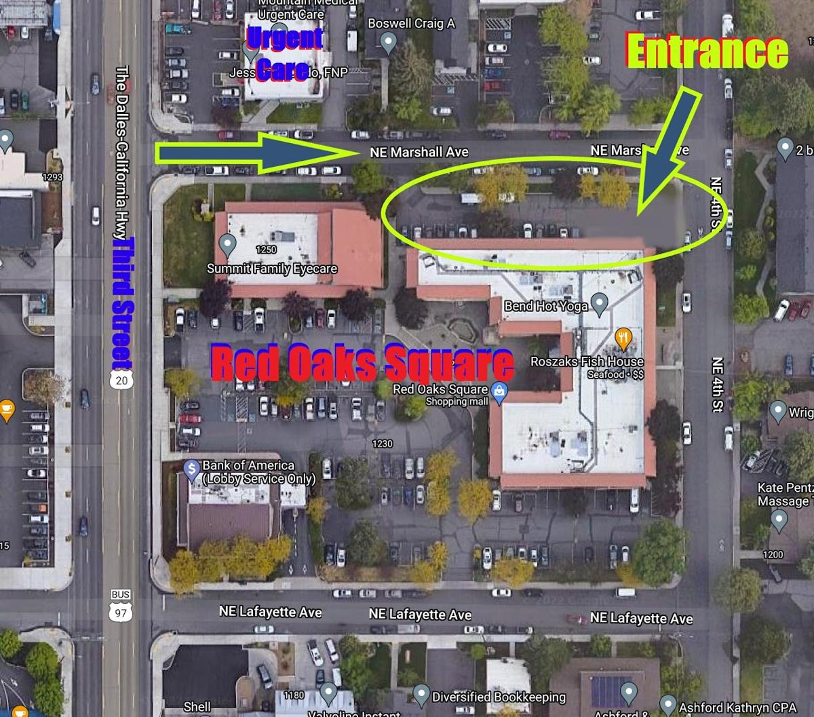
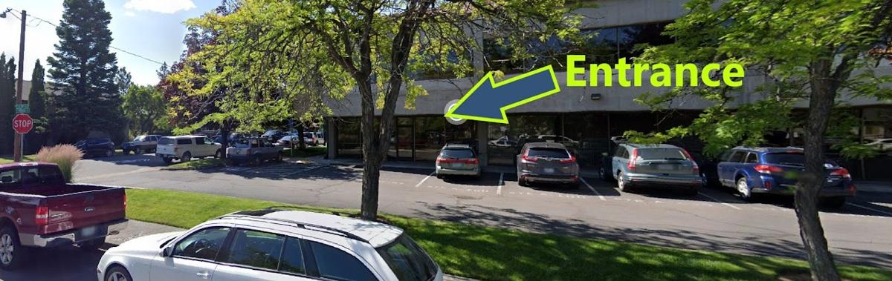
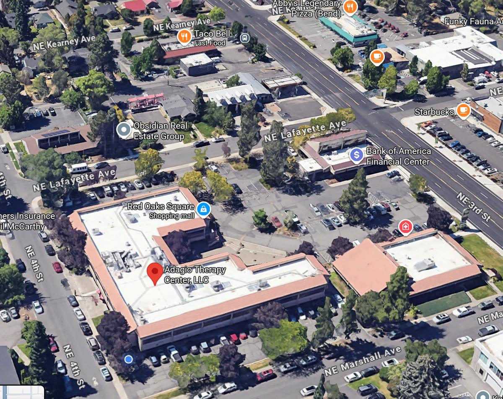

1230 NE 3rd St., Suite A160, Office D
Bend, OR 97701
Adagio Therapy Center is located at the northeast corner of the Red Oaks Square plaza, on the southeast corner of Marshall and 4th. Parking for Red Oaks Square is available from the entrance on NE 3rd, just four blocks north of Greenwood.
Coming from Third, head east down Marshall toward Fourth and you'll see a parking lot on the right just before 4th. Parking is usually available in the lot or on the street.
The entrance to the waiting area is just next to the parking lot near Fourth.
Make yourself comfortable and I will call you into the office at your scheduled appointment time.


